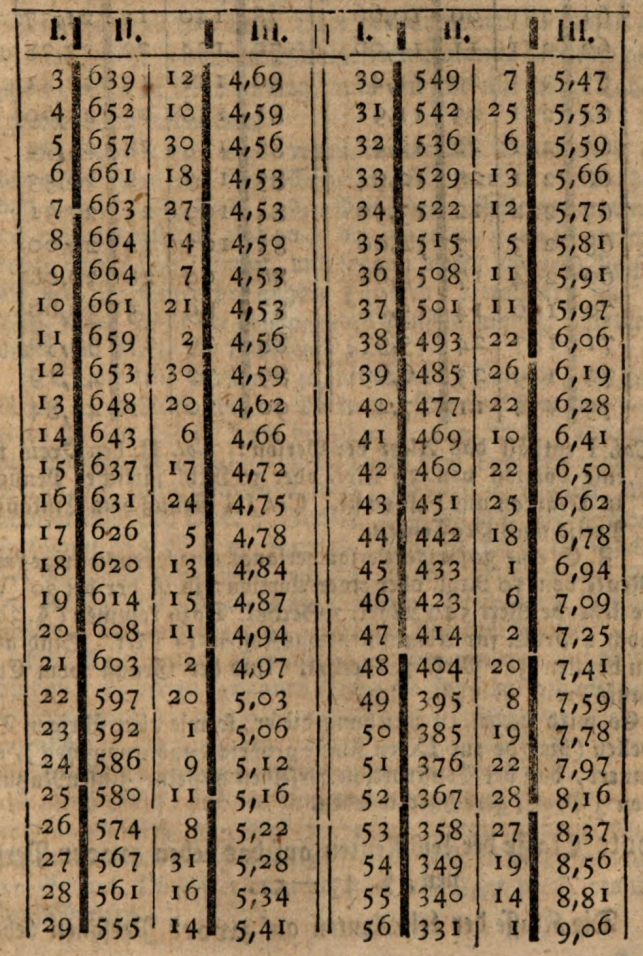
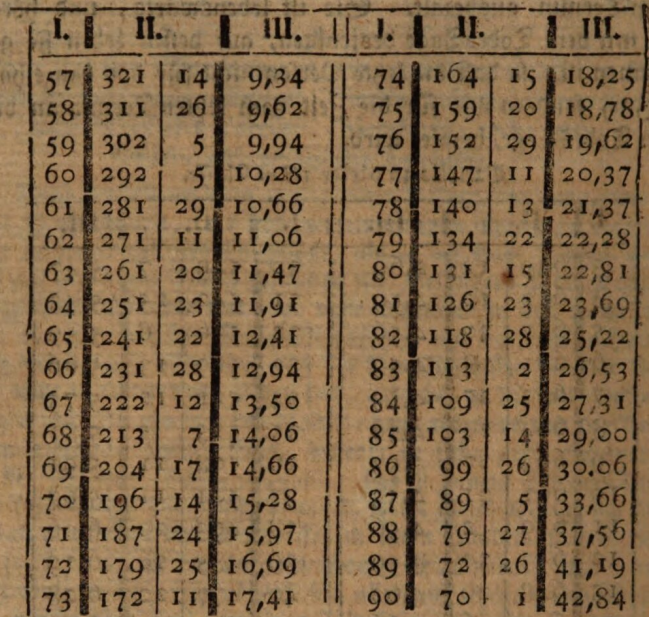
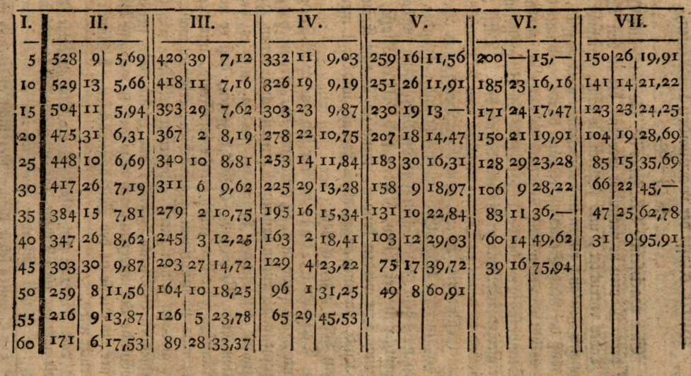
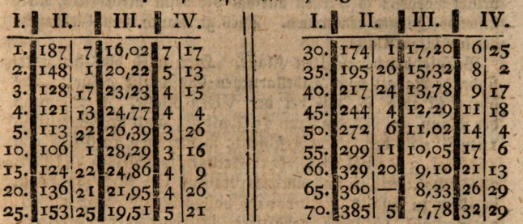
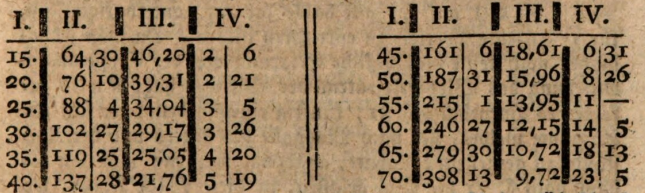
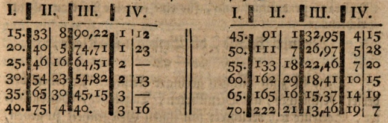

Auszug aus der "Anordnung der in Hamburg errichteten Allgemeinen Versorgungsanstalt. Zwote Auflage, mit vermerten und verbesserten Tabellen. Hamburg, 1779, 30 Seiten, und 30 Blätter Tabellen.
Eben so ist die Klasse der aufgeschobenen LeibRenten, zumal auf ContributionsFuß, sehr nützlich für allerhand Gelerte und Künsteler, welche ohne Amt von ihrer Industrie notdürftig so lange leben, als Jare und Kräfte ihren Fleiß unterstützen; aber bei zunemendem Alter und sinkenden Kräften, wo nicht die Gefar des Darbens zu besorgen haben, doch billig wunschen, bei minder strenger Arbeit leben zu können.
Den nun folgenden Auszug haben die Leser, mit mir, dem Hrn. StiftsAmtmann Oeder zu verdanken.
Erste Classe, nämlich der LeibRenten, welche sogleich fällig werden. §. 42-46 der Anordnung.
§. 42. In dieser Klasse kan ein jeder, entweder auf sein eigenes oder eines andern Leben, ein bestimmtes Capital einsetzen: wofür er eine dem Alter der Person angemessene LeibRente erhält, die ihm durch einen, von den derzeitigen Directoren, Namens der ganzen VersorgungsAnstalt, ausgestellten LeibRentenBrief, versichert wird. Diese LeibRente (§. 43) fängt mit dem Tage des geschlossenen Contracts an zu laufen, und wird zuerst in dem nächstfolgenden ZalungsTermin ausbezalt. Sie ist lebenswärig, und höret auf mit dem TodesTage desjenigen, auf dessen Leben sie genommen ist; so daß die letzte Person nicht für das ganze halbe Jar, sondern nur für die Zeit vom letzten Termin an bis zum TodesTage, bezalet wird.Tabelle in dieser Isten klasse.

 Col. I enthält das Alter der Person: Col. II den Preis für eine Portion von 30 Mrk. oder 10 Rthl. järlicher Pension, in Marken und halben fl. Col. III Genuß vom EinkaufsPreise nach ProCenten.
Z. E. eine 30järige Person verlangt eine lebenswärige LeibRente von 10 Rthl. ober einer Portion: so ist der bei 30 Jare stehende Wert 549 Mark. 7 Sechsl. Dazu kommen (§.30) noch 2 ProC. für AdministrationsKosten, 11 Mrk. Sind also zu bezalen 566 Mrk. 7 Sechsl. Und der Genuß vom EinkaufsPreise ist 5 7/100 ProC.
Es wird hiebei, in Ansehung dieser, so wie aller übrigen Tabellen (die 7de zur IXten Klasse gehörige ausgenommen), erinnert, daß bei Construction derselben aus eine ZinsenNutzung von 3 ProC. gerechnet worden.
Zwote Classe der LeibRenten auf das Leben zwoer Personen, §. 47-51.
Die Klasse der LeibRenten auf zwoer Personen Leben ist für solche, welche in Verbindung mit einer zwoten Person eine LeibRente verlangen, diese, so lange sie beide leben, auch zusaminen genießen wollen; die aber, nach des Einen Absterben, an den Längstlebenden ganz verfällt, so daß dieser diejenigen LeibRenten bis an den Tag seines Todes genießet, welche sie sonst beide genossen haben. - Die LeibRente (§. 49) fängt sogleich mit dem Tage des Contracts zu laufen an, und wird zuerst in dem nächstfolgenden Zalungs Termine ausbezalet. Sie ist lebenswärig, und erlöscht mit dem TodesTage des Längstlebenden.Bei dieser Klasse wird voranstehende Iste Tabelle mit der hiernächst folgenden Vten Tabelle, solchergestalt verbunden, daß man aus der Tab. I, den Preis der LeibRente der Einen dieser zwo Personen, und zwar der jüngeren, wenn sie verschiedenen Alters sind, nimmt, und sodann diese (jüngere) Person, als den Versorger der andern (älteren) betrachtet; aus der Tab. V den Wert der abhängendrn Pension nimmt, und diesen Wert zum Werte der LeibRente zulegt.
Z. Ex. die eine Person sei 30, die andre 45 Jarealt; die LeibRente sei 10 Rthl. oder 1 Portion. Die LeibRente der 30 järigen Person kostet, nach der Tab. 1, 549 Mrk. 7 Sechsl.: die Pension der 45jarigen Person nach dem Tode des 30 järigen Versorgers, kostet nach der Tab. V, 69 Mrk. 23 Sechsl. Man addiret also 549 Mrk. 7 Sechsl. und 69 Mrk. 23 Sechsl.: so kommt 618 Mrk. 30 Sechsl. Dazu 12 Mrk. 12 Sechsl. für AdministrationsKosten (§. 30). Macht zusammen 631 Mrk. 10 Sechsl. für jede einzelne Person. Diese beide Personen genießen also ungefär 4,85 proC. des EinkaufsPreises.NB. Sollten auch allenfalls 3 Personen in eine änliche Verbindung zu treten gesonnen seyn : so kan ihnen darüber im VerwaltungsComtoir nähere Auskunft erteilt werden. Z. Ex. wenn die 3 Personen 49, 30, und 10 Jare alt sind; so kostet die LeibRente von 1er Portion, oder 10 Rthl. järlich, welche gleich fällig, und bis zum TodesTage des Längstlebenben empfangen wird, 755 Mrk 7 Sechsl. Hierzu 2 proC. AdministrationsKosten, 15 Mrk. 3 Sechsl. Also in allem 770 Mrk. 10 Sechsl. Diese Personen genießer also 3,97 proC, des EinkaufsPreises.
Dritte Klasse der aufgeschobenen LeibRenten, S. 52-57.
Unter den aufgeschobenen verstehet man eine solche LeibRente, die zwar von derjenigen Person, welche sich dieselbe versichert hat, bis ans Ende ihres Lebens genossen, aber nicht so, wie die LeibRente der 1sten Klasse, mit dem Tage des geschlossenen Contracts zu laufen anfängt, sondern erst nach Ablauf des im Contract festgesetzten ZeitPuncts ausbezalt und gehoben wird. Der Vorteil (§. 53), welchen der Einsetzer von der RuheZeit (oder derjenigen Zeit, in welcher er gar keine Zinsen seines eingelegten Capitals genießt) erhält, bestehet darinn, daß er dadurch nach Ablauf derselben eine größere Zinse bekömmt, als er in der 1sten Klasse erhalten würde, allwo er sogleich zur Hebung der LeibRente gelangt.Tabelle zu dieser IIIten Klasse.
Col. I enthält das Alter. Col. II bis VII enthält den Preis Der LeibRente: und zwar Col. II, im Fall die Hebung nach 5 Jaren anfangen Col III, wenn sie nach 10 Jaren anfangen soll, u. s. w.: mit beigefügten ProCenten.
Z. E. eine 30 järige Person verlangt eine LeibRente von 10 Rthl. oder 1er Portion, järlich, die aber 20 Jare, oder bis nach ihrem 50sten Jare des Alters, aufgeschoben bleiben soll. Bei 30 Jare Alter, nach 20 Jaren, stehet 158 Mrk. 9 Sechsl. dazu 2 proC. Administr.Kosten, 3 Mrk. 5 Sechsl.: sind also in allem dafür zu bezalen 161 Mrk. 14 Sechsl. Der Genuß beträgt 18,97 proC. des Preises.
Ist es eine 27järige Person: so nimmt man das behörige Medium zwischen 183 Mrk. 30 Sechsl. bei 25 Jar. Alter nach 20 Jar, und 158 Mrk 9 Sechsl, bei 30 J. Alter nach 20 Jar; indem man nämlich die Differenz 25 Mrk. 21 Sechsl. in 5 Teile teilet, und 2 solcher Teile von 183 Mrk. 30 Sechsl. abzieht. Der Rest 173 Mrk. 22 Sechsl. ist dann der Wert der LeibRente einer 27 jarigen Person.
Is es eine 33järige Person: so nimmt man das behörige Medium zwischen 158 Mrk. 9 Sechsl. und 131 Mrk. 10 Sechsl. bei 35 Jar. Ater nach 20 Jar,
Tabelle zu dieser IIIten Klasse.

Vierte Klasse der wachsenden LeibRenten, § 58-62.
Eine wachsende LeibRente ist, die zwar einer Person, auf deren Namen sie versichert worden, bis an den Tag ihres Todes entrichtet, und sogleich als fällig gerechnet wird; aber eine Zeitlang ruhen und einbehalten werden soll: jedoch so, daß der RuheStand unbestimmt bleibt, und nach Gefallen geendigt werden kan; und daß die unter wärendem RuheStande fällig werdende JaresGefälle, zur Vergrösserung der dereinstigen LeibRenten angewendet werden. Diese Klasse ist besonders denen zu Dienste, welche, weil sie ihrer schwächlichen Gesundheit, Alters, oder ihres Berufs und Betriebs Halber, mererer LebensGefar ausgesetzt sind, als andre Menschen nach dem gewönlichen Laufe der Natur seyn würden, als Versorger in der VIten, VIIden, und VIIIten Klasse, nicht angenommen werden können, wenn sie für eine Frau, für ein Kind, für einen angehörigen Freund, und dergl. mer, nach ihrem Tode sorgen wollen.Derjenige (§. 60), welcher sich eine wachsende LeibRente, wie solche in §. 58 bestimmt ist, erkauft hat, und sie nicht länger ruhen lassen will; muß sich in denen, §. 5 zur Aufname festgesetzten Terminen, melden, und es der Direction dieser VersorgungsAnstalt anzeigen, daß er nunmer inskünftige seine ihm zukommende LeibRente, mit demjenigen, was sie inzwischen angewachsen, erheben wolle. Er gibt alsdann seinen zuerst erhaltenen LeibRentenBrief der wachsenden LeibRente, zurück, und erhält einen neuen auf gewönliche Art unterzeichneten dagegen, in welchem die LeibRente, so wie sie zu der Zeit angewachsen, bestimmt ausgedruckt wird.
Tab. III * zur 4ten Klasse. Z. Ex. Eine 30järige Person, die nach der 1sten Tabelle, für eine gleich fällig werdende LeibRente von 1 Portion, oder 10 Rthl. järlich, in allen 560 Mrk. 7 Sechsl. bezalt hat, solche aber 20 Jare ruhen läßt, erhält sodann 104 Mrk. 3 Sechst. järlich bis an ihr Ende.
Man kan sich eine künftige lebenswärige LeibRente auch auf ContributionsFuß, mittelst halbjärlichen Beitrags von 5 Rthl, oder 15 Mrk., nach folgender Tabelle ... verschaffen. Z. Ex. eine 40järige Person bezalt jetzt gleich 15 Mrk., und färt damit halbjärlich 20 Jare fort, d. i. bis zum 60sten Jare des Alters: so erhält sie bis an ihr Ende järlich 112 Mrk. 31 Sechsl. Die AdministrationsKosten werden auf 5 Jare pränumerirt, und betragen 3 Mrk.
*Die Tabellen selbst können hier nicht abgedruckt werden; sondern man beziehet sich, solcher wegen, auf die oben angefürte HauptSchrift: um so viel mer, da alle diese Tabellen nur für die schwer reichen Länder, wo der ZinsFuß nur 3 ProC. ist, d. i. nur für einen unendlich kleinen Teil unsers deutschen Vaterlandes, sind. S.
Funfte Klasse, der aufhörenden LeibRenten. § 63-66.
Diese aufhörende LeibRenten sind für solche, deren Pension mit dem zurückgelegten 25sten Jare ihres Lebens aufhören soll. Sie sind zum Dienste solcher Waisen eingerichtet, denen keine zureichende WaisenPension bei der Eltern LebZeiten, in der dazu bestimmten VIIIten Klasse, erkauft worden; und denen bei einem Vermögen, dessen bloße Zinsen nicht hinlänglich sind, am besten geholfen werden kan, wenn mit Aufopferung eines Teils dieses Vermögens, ihnen für die Jare, wo es darauf ankömmt, sich ein Etablissement auf LebensZeit zu verschaffen, eine zweckmäßige und reichlichere Unterstutzung, als sonst möglich wäre, verschafft wird.Z. E. Es wird für ein 5järiges Kind eine aufhörende LeibRente von 10 Rthl. oder 1 Portion järlich, verlangt: so ist der Preis 396 Mrk. 14 Sechsl. Dazu für Administr.Kosten 2 ProC., 7 Mrk. 30 Sechsl. Macht zusammen 404 Mrk. 14 Sechsl. Und die LeibRente macht 7 56/100 ProC. des EinkaufsPreises.
Sechste Klasse, abhängender Pensionisten überhaupt, §. 67-78.
In die Klasse der abhängenden Pensionen gehören alle diejenige, deren Pension bis an das Ende ihres Lebens genossen, aber erst nach erfolgtem Absterben eines Verforgers fällig wird. In diese vor allen wichtige und zalreiche Klasse, gehören alle diejenige, welche als Männer für ihre Frauen, als Frauen für ihre Männer, als Eltern für ihre Kinder, als Kinder für ihre Eltern, als Geschwister für Geschwister, als Freund für Freund, als Patron sür Client oder Bediente, nach ihrem, der Versorger, Tode sorgen wollen; ohne daß dabei, beides in Ansehung des Versorgers und des Versorgten, auf das Geschlecht Rücksicht genommen wird. Diejenige Person (§. 68), welche eine bestimmte Summe, entweder auf Capital- oder ContributionsFuß, bei der Versorgungsanstalt einlegt, damit nach ihrem Tode eine andere bestimmte Person, eine der Einlage gemässe lebenswärige Pension genießen soll, wird der Versorger; diejenige Person aber, welche die Pension nach erfolgrem Ableben des Versorgers genießen soll, der Versorgte genannt. So wie in dieser Klasse ein jeder der Versorger eines andren seyn kan: so bleibt es auch dem Versorgten unbenommen, wieder der Versorger seines Versorgers zu werden; folglich können auch 2 Personen einander so versichern, daß der Ueberlebende allemal eine lebenswärige Pension genießt. Auch die Ehemänner können ihre Frauen in dieser, und nicht in der folgenden VIIden Klasse, einkaufen: sie genießen aber alsdarn den im §. 82 bestimmten Rabatt nicht; worgegen auch, bei erfolgter 2ter oder fernerer Heirat der Wittwe, die Pension nicht einbehalten, sondern bis an ihren TodesTag unausgesetzt entrichtet wird. Alle Pensionen fangen mit dem TodesTage des Versorgers zu laufen an, und werden, in dem darauf folgenden nächsten ZalungsTermin, zuerst an den Pensionisten oder Versorgten ausbezalt. Mit dem TodesTage des Pensionisten hören sie gleichfalls auf, als mit welchem der mit der VersorgungsAnstalt eingegangene Contract völlig erloschen und aufgehoben ist. Personen, deren Leben einer außerordentlichen Gefar ausgeseht ist, als z. E. auswärtige MilitärPersonen, und alle Seefarende, deren gewönliches Gewerbe das Seeleben ist, oder auch die sonst, ihres Gewerbes halber, die meiste Zeit ihres Lebens auf dem Wasser, oder an gefärlichen Oertern, zubringen müssen, können als Versorger in diese Klasse nicht aufgenommen werden; sondern können diejenige, für welche sie sorgen wollen, in der IVten Klasse einkaufen. In Ansehung derjenigen Personen, welche blos auf einer zufälligen Weise eintreffenden Reise sich zur See begeben, und ohne es angezeigt zu haben, in SeeGefar umkommen, wird es so, wie §. 23 bemeldet, gehalten. Obwol in dieser, und der VIIden und VIIIten Klasse, ein jeder die Wal hat, auf Capital- oder ContributionsFuß einzusehen: so sind doch hievon diejenigen Versorger ausgenommen, die mit ihrem Versorgten in einem gar zu entfernten Verhältniffe des Alters stehen. Es ist daher der ZeitPunkt, wo der ContributionsFuß nicht verstatet werden kan, in der Tabelle durch QuerStriche bemerkt worden. Die Contributionen dieser Klasse werden jedesmal pränumerirt und ein eintretender Interessent pränumerirt das erstemal für 2 Termin zugleich; jedoch so, daß ihm das für den 2ten Termin bezahlte, zu gute gerechnet wird: daher er also im 2ten Termine nichts, in dem dritten und folgenden Terminen aber, jedesmal wieder einen Termin bezaldt. Stirbt er vor dieser Zeit, so ist das bezalte an die Casse verfallen.Siebende Klasse, oder WittwenKasse insbesondere, §. 78-90.
Die hier den Wittwen versicherte Pension ist zwar, wie die Pension andre abhängigen Pensionisten, lebenswärig: doch hört dieselbe, wenn die Wittwe in eine neue Ehe tritt, zum Besten der Anstalt mit dem HochzeitsTage auf, und bleibe so lange eingezogen, als die Ehe dauert. Wenn aber die Pensionistin ihren neuen Ehemann wieder überleben, und von neuem Wittwe werden sollte: so nimmt die der Wittwe von dem ersten Ehemann versicherte Pension, zugleich mit dessen TodesTage wieder ihren Anfang; ohne daß der neue und zulegt verstorbene Ehemann, wieder etwas für sie einzusetzen nötig gehabt: es sei dann, daß eine höhere Pension verlangt worden. Auch wird einer solchen wieder heiratenden Wittwe noch überdem, in dem auf den HochzeitsTag zunächst folgenden Termine, gleichsam zum HochzeitsGesschenke, die Summe von eines Jars zu genießender Pension ausgezahlt: jedoch mit der Bedingung, daß, falls der neue Ehemann noch innerhalb JahresFrist versterben sollte, die Pension bis zu solcher Zeit als schon genossen angerechnet werde. In Betracht der, aus den wegfallenden Pensionen wiederheiratender Wittwen, für die Casse zu hoffenden Ersparung, wird den Ehemännern ein hier bestimmter Nachlaß an den bestimmten Einschüssen oder Contributionen, verstattet. Die Tabelle gibt übrigens sowol für die Wittwen, als für andre abhängende lebenswärige Pensionisten: jedoch mit dem Vorbehalte, den Nachlaß nach Masgabe dessen, was in der Folge die Ersparung in Ansehung des WiederVerheiratens leren wird, zu erweitern oder zu vermindern. Auch erstreckt sich dieser Nachlaß überall nicht auf den vorgeschriebenen Beitrag zu den AdministrationsKosten. Fürs erste wird dieser Nachlaß hiemit auf 12 ProC. von dem Einschusse oder von der Contribution gesetzt: jedoch nur für die ersten Ehemänner, welche innerhalb Jahresfrist dieser Anstalt beitreten, und für diejenigen zukünftigen Ehemänner, welche ihren Beitritt nicht über 1 Jar nach der Hochzeit aussetzen, und desfalls einen giltigen TrauSchein beibringen; jedoch nur, wenn die bestellte Pension höchstens 10 Portionen beträgt.In EheScheidungsFällen bleibt, ohne sich darauf einzulassen, ob die Frau der schuldige oder unschuldige Teil sei, jederzeit der geschiedenen Frau, ihr Anspruch zur Pension, nach dem Tode ihres geschiedenen Mannes, ungränkt vorbehalten. Nur ist sie sodann auch, wenn der Mann auf ContributionsFuß angenommen worden, die Contribution bis zu dessen Tode zu entrichten schuldig. Ist sie des Vermögens nicht, so wird ihr der im §. 22 beschriebene Ausweg verstattet.
[Nun folgen 17 Tabellen vom "PensionistenAlter, 1 Jar. bis 70 Jar. Hier sind 2 zur Probe j. PensionistenAlter, 1 Jar. I. II. III. IV.]
PensionistenAlter, 1 Jar

PensionistenAlter 35 Jar

Col. I enthält des Versorgers Alter; Col. II. den Einschuß auf CapitalFuß: Col. III. Verhältniß der Pension zum Einschuß in ProCenten: Col. IV. halbjärigen Beitrag auf ContributionsFuß. In der Anordnung selbst ist diese Tabelle auf alle Combinationen von Jaren des Pensionisten und Jaren des Versorgers ausgefürt.
Beispiel bei der VIIten Klasse. Ein 35järiger Versorger bestimmt nach seinem Tode, seinem 25järigen Pensionisten eine lebenswärige Pension von beliebigen Portionen. Für 1 Portion von 10 rthl. ist der Einschuß nach CapitalFuß 161 Mrk. 3 Sechsl. ober der halbjärliche Contribution 5 Mrk. 24 Sechsl. und 3 Mrk. 7 Sechsl. die 2 proC. AdministrationsKosten. Also ist dafür entweder 164 Mrk. 10 Sechsl. ein für allemal, oder wenn der ContributionsFuß gewählt wird, für die beiden 1sten Termine, mit InbeGriff der Administr.Kosten, 14 Mrk. 23 Sechsl. gleich, und im 3ten Termin u. s. f. 5 Mrk. 24 Sechsl. halbjärlich zu bezalen. Die Pension macht 18 62/100 ProC. des Einschußes auf CapitalFuß. Wenn ein Versorger jünger ist, als in dieser Tabelle bei seinem Pensionisten ausgedruckt worden; so werden allemal die beim niedrigsten Alter stehende Quanta genommen. Dies gleit auch vom Gebrauche bei der IIen Klasse.
Beispiel bei der VIIten Klasse. Hier wird blos der stattfindende Rabatt vom Tabellarischen Einschusse gekürzt; das übrige ist eben so, wie bei der VIten Klasse. Z. B. wenn der Mann 35 und die Frau 25 Jare alt ist; nach der Einritt im 1sten Jar nach der Heirat geschieht: so betragen 12 proC von 161 Mrk. 3 Sechsl. 19 Mrk. 11 Sechsl., und bleiben 141 Mrk. 24 Sechsl. mithin sind nach CapitalFuß 144 Mrk. 31 Sechsl. in allem zu bezalen. Oder vom halbjärigen Beitrag 5 Mrk. 24 Sechsl., 12 proC. rabatiert, bleiben 5 Mrk. 2 Sechsl. : daher das erstemal 13 Mrk. 11 Sechsl. und im 3ten Termin 5 Mrk. 2 Sechsl. u. s. f., alle halber Jar auf ContributionsFuß für 1e einzelne Portion zu entrichtet ist. Da man jedoch bisher noch keine hinlängliche Erfahrung von der Ersparung in Ansehung des Wiederheiratens der Wittwen hat, so wird wir folge des Vorbenalts §. 81. künftig einem jeden, der sich zur Aufname meldet, der nach Masgabe des Alters und der Umstände zu genießende Rabatt, angezeigt werden; und ihm sodann nach §. 71 die Wal gelassen, in diese VIIde Klasse, wo die Pension wärend der 2ten und ferneren Verheiratung der Wittwen, eingebet, oder in die VIte Klasse, wo die Pension unausgesetzt lebenswärig bezahlt wird, einzutreten.
Achte Klasse, nämlich WaisenKlasse, §. 91-98.
In diese Klasse gehören Minderjärige, denen auf den Fall ihres WaisenStandes, oder des Todes ihres Versorgers, eine mir vollendetem 25sten Jar des Alters, wider aufhörende Pension versichert wird. Es ist einerley, ob Vater, Mutter, oder eine andere Person, der Versorger ist, mit dessen Tode die Pension ihren Anfang nimmt. Z. Ex.PensionistenAlter, 5 Jare.

Die Einrichtung dieser Tab. ist wie bei der vorigen. Wer in dieser Klasse den ContributionsFuß wählt, deponirt zur Sicherheit der ferneren Beiträge, ein Drittel seiner künftigen järlichen Pension, b. i. 10 Mrk. für Ie Portion.
Z. E. ein 40järiger Versorger bestimmt einem 5järigen Kinde eine WaisenPension von beliebigen Portionen: so ist der Einschuß für eine einzelne Portion von 10 rthl. järlich, 75 Mrk. 4 Sechsl. nach CapitalFuß, oder 3 Mrk. 16 Sechsl. die halbjärige Contribution, und 1 Mrk. 16 S. die AdministrationsKosten. Im 1sten falle nach Capitalzuß, so ist also überhaupt 76 Mrk. 20 S. zu bezalen, und die Pension macht 40 proC des Einschusses. Nach ContributionsFuß aber, betragen die beiden ersten Termine 7 Mrk.; dazu die deponirende 10 Mrk. und 1 Mrk. 16 S. AdministrationsKosten, in allem 18 Mrk. 16 S. die bei der Aufnahme gleich zu bezalen: im 3ten Termin u. s. f. 3 Mrk. 16 S. Wenn beide bis zum 25sten Jar des PensionsAlters leben: so wird das lestzemal nicht bezahlt; sondern wenn bis dahin die Beiträge nicht entrichtet werden, wird das deponirte Geld nebst der Zins wieder zurück gegeben.
Da hier und Tab. IV eine bis zu gewissen Alter dauernde halbjahrige Pension bestimmt wird: so kan auch zu gewissem. Endzwecke ein bei gewiffem Alter auf einmal zu habendes Capital verlangt, und dafür der Einschuß erweitert werden.
Nun folgt eine Tab. zu einer Braut- und AussteuerKlasse. Z. E. für ein 3järiges Kind, wenn es das 15te Jar des Alters erreicht, wird ein Braut- oder AussteuerPfennig von beliebigen Portionen (bis 40) verlangt. Der Preis für eine einzelene Portion von 10 rthl. ist nach CapitalFuß 17 Mrk. 12 S. ober nach ContributionFuß 1 Mrk. halbjärig, und die 2 proC. AdministrationsKosten betragen 11 S. Also ist entweder 17 Mrk. 23 S. auf einmal zu bezalen: oder nach ContributionsFuß, das erftemal 1 Mrk. 11 S. und ferner alle halbe Jar 1 Mrk., als Beitrag, praenumerando, für eine einzelne Portion zu entrichten.
Neunte Klasse die ErparungsKlasse, §. 94-98.
Diese ist zum Nutzen geringer fleißiger Personen beiderlei Geschlechts, als Dienstboten, Tagelöhner, Handarbeiter, Seeleute 2c., errichtet; um ihnen Gelegenheit zu geben, auch bei Kleinigkeiten etwas zurücklegen, und ihren sauer erworbenen Not- und BrautPfennig sicher zu einigen Zinsen belegen zu können: wobei man hoffet, daß sie diese ihnen verschaffte Bequemlichkeit, sich zur Aufmunterung gereichen lassen mögen, um durch Fleiß und Sparsamkeit dem State nützlich und wichtig zu werden.Die dazu gehörige VIIdte Tab. zeigt den Anwachs des Capitals mittelst zugelegeter einfacher järlichen Zinsen zu 2 1/2 ProC.
Zehnde Klasse, die BeerdigungsKlasse, §. 99-114.
Diese Klasse ist solchen Personen zu Dienste errichtet, welche dafür sorgen und versichert seyn wollen, daß as bei ihrem Tode an einer bestimmten Summe zu ihrer anständigen Beerdigung nicht felen möge.Z. Ex. eine 40järige Person bestimmt in ihrem Begräbnisse beliebige Portionen. Für Eine Portion, von 10 rthl. ist der Preis 16 Mrk. 21 S. die 2 proC. Administrationskosten 11 S. 17 Mrk. Nach ContributionFuß ist der halbjärlige Beitrag 18 S. das erftemal sind also für 3 Termine, nebst AdministrationsKosten, 2 M., 8 S. und im 4ten Termin u. s. f. alle halbe Jar 18 S. für eine einzelne Portion von 10 rthl. zu entrichten. Personen über 50 J. können nur auf CapitalFuß eintreten.